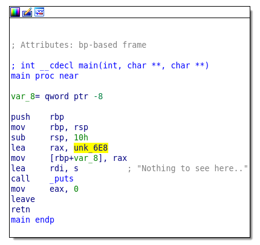
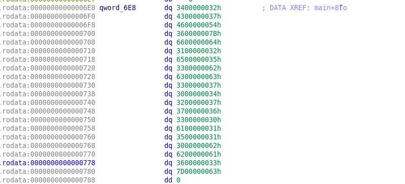

24/7 CTF - The More The Merrier
Description
One byte is great. But what if you need more? Can you find the flag hidden in this binary?
Solution
$ file the_more_the_merrier
the_more_the_merrier: ELF 64-bit LSB shared object, x86-64, version 1 (SYSV), dynamically linked, interpreter /lib64/l, for GNU/Linux 3.2.0, BuildID[sha1]=0f750d638337391328fa7432dd362189de908c1e, stripped
$ ./the_more_the_merrier
Nothing to see here..
Wow wow, calm down, I can’t follow with all the output! So… Running the binary isn’t quite the definition of excitement…
Let’s disassemble the thinggy in IDA! It’s a fairly small binary, with everything in the main() function.
The waow-so-useful string Nothing to see here... we saw earlier is given as argument to puts().

But, before that call to puts() occurs, there’ s something else weird going on… that unk_6E8 which is stored in var_8.

What a curious blob of data! The first and last byte of each line looks suspiciously like they are in the ASCII range.. .Let’s put that theory to the test by manually checking the first ones:
- 0x32 =>
2 - 0x34 =>
4 - 0x37 =>
7 - 0x43 =>
C
Yep, that sounds like a flag! Let’s automate this with a few lines of Python:
#!/usr/bin/python3
right = [0x32, 0x37, 0x54, 0x7b, 0x64, 0x32, 0x35, 0x62, 0x63, 0x37, 0x34, 0x37, 0x36, 0x30, 0x31, 0x31, 0x62, 0x61, 0x33, 0x63]
left = [0x34, 0x43, 0x46, 0x36, 0x66, 0x31, 0x65, 0x33, 0x63, 0x33, 0x30, 0x32, 0x37, 0x33, 0x61, 0x35, 0x30, 0x62, 0x36, 0x7D]
flag = []
for i in range(len(left)):
flag.append(chr(right[i]))
flag.append(chr(left[i]))
Flag: censored according to the write-ups policy of 24/7